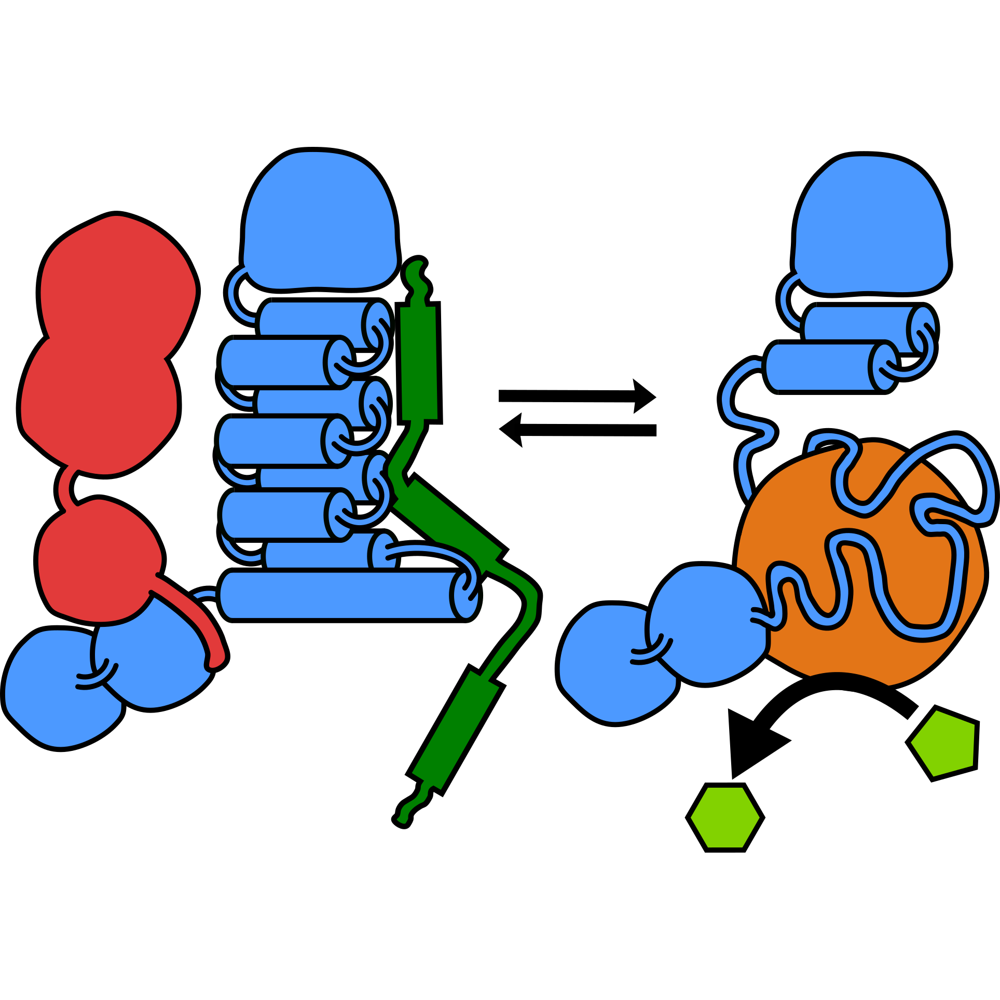
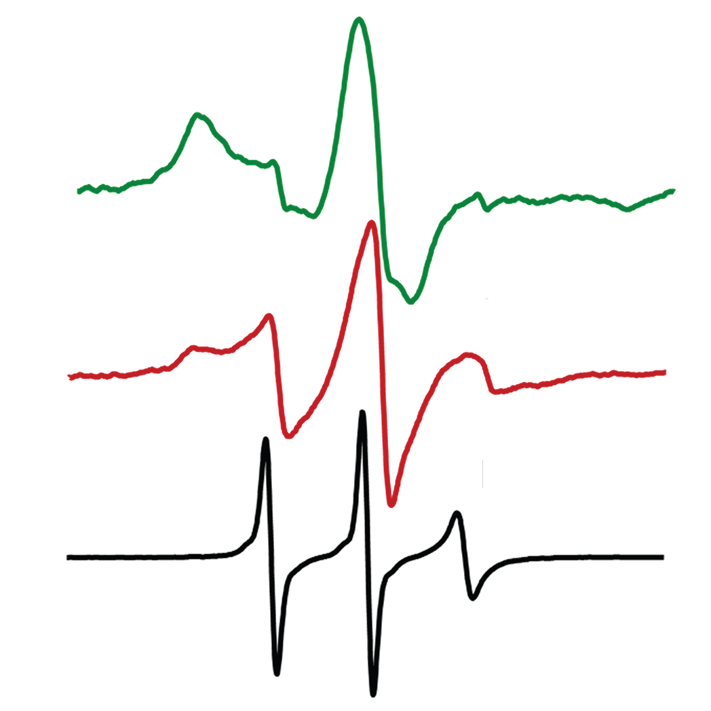
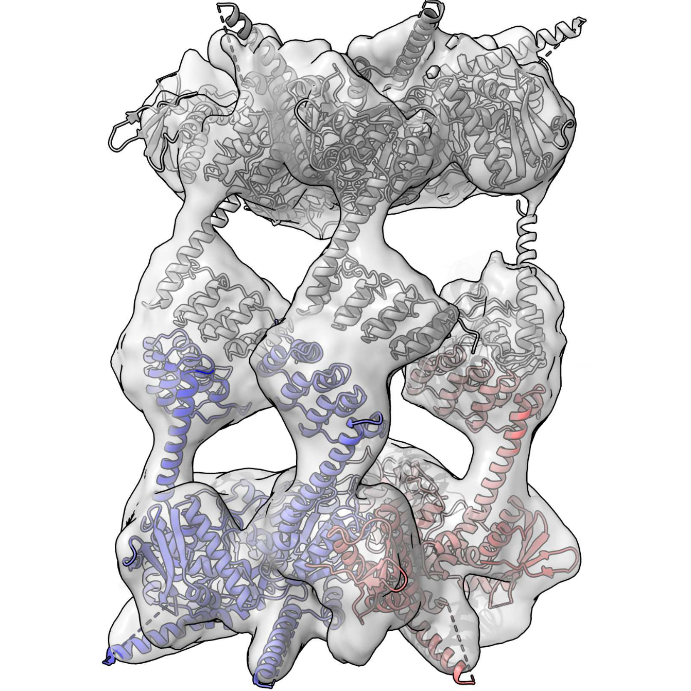
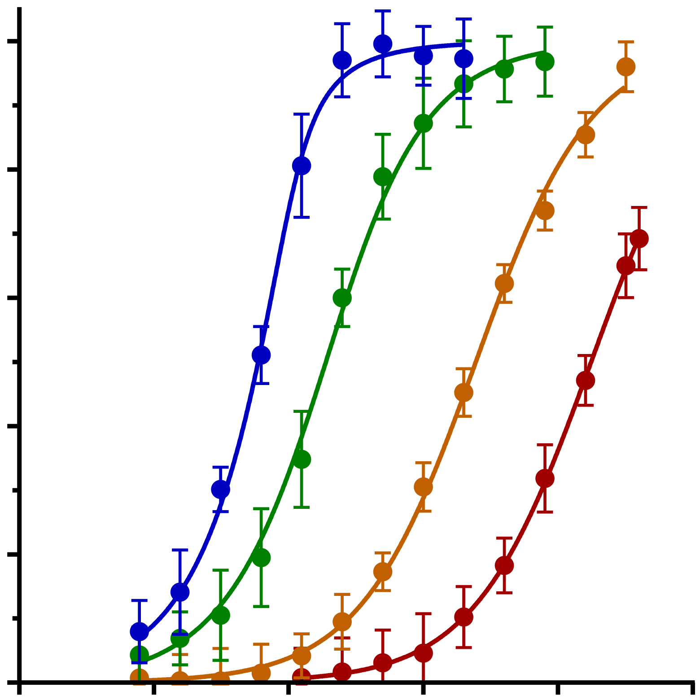
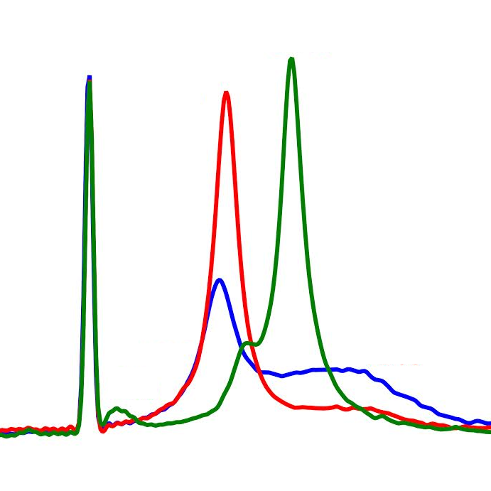
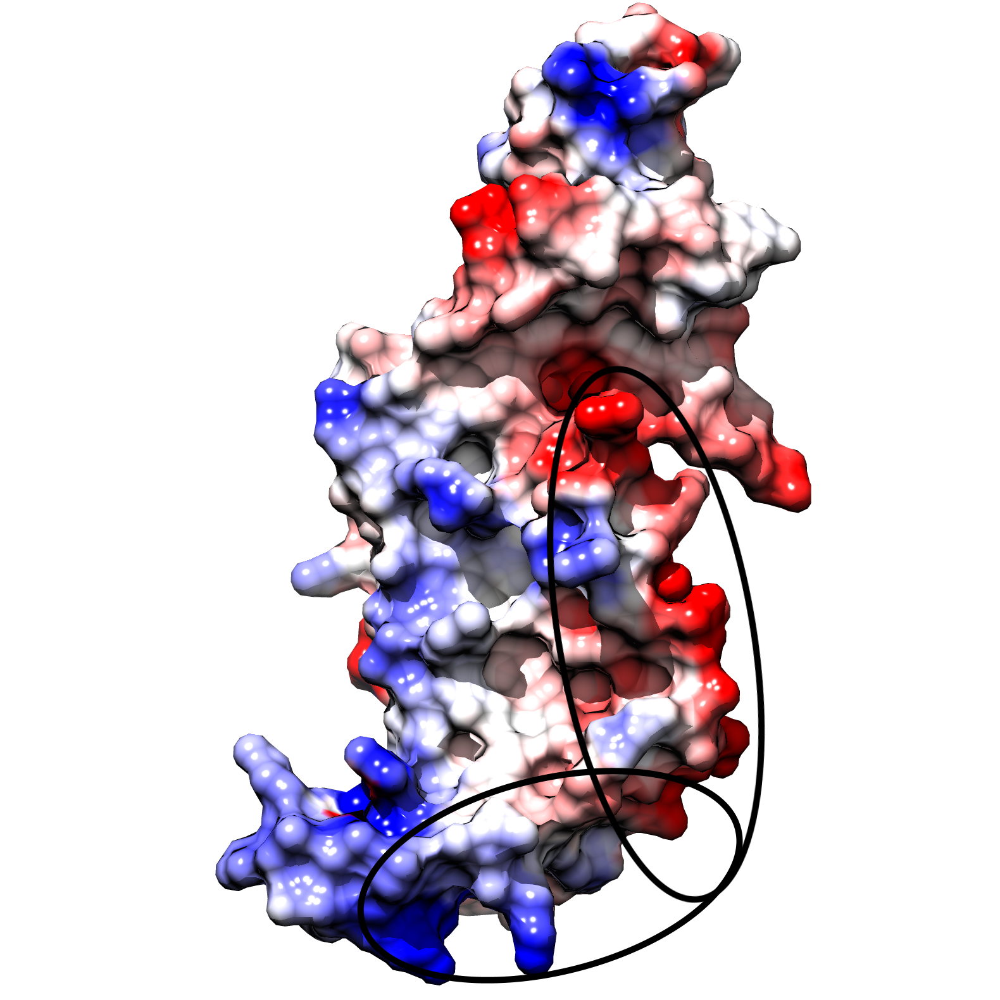
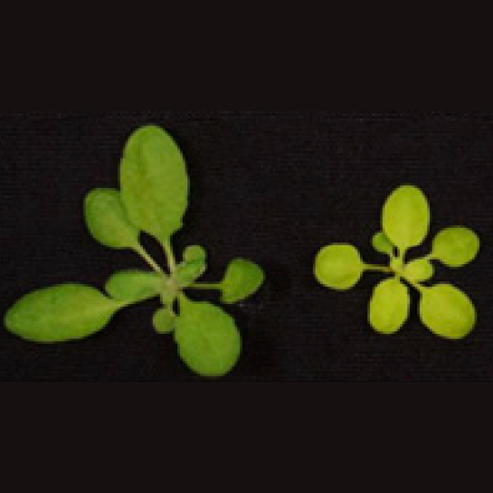
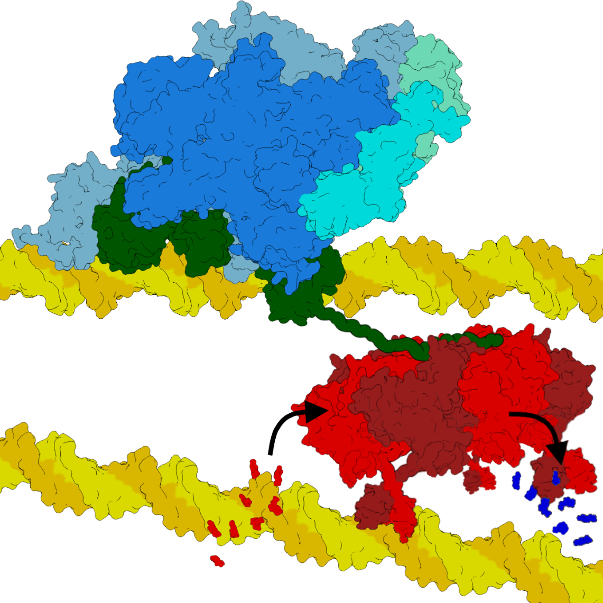
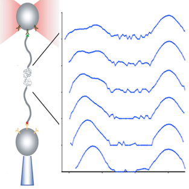

Alex Siegelasiegel@caltech.edu CV ResumePostdoctoral Scholar in Chemistry, California Institute of Technology (2017-present) Ph.D. Biophysics and specialization in Chemical Biology, University of California, Berkeley (2016) B.S. Biology and Chemistry double major, graduated with honors, California Institute of Technology (2008) |
Research
Chloroplast Signal Recognition Particle
The light harvesting complex (LHC) within the chloroplast thylakoid membrane consists of light-harvesting chlorophyll-binding proteins (LHCPs) bound to chlorophyll (Chl) and other pigments that funnel photons to nearby reaction centers. LHCP’s three hydrophobic transmembrane domains (TMDs) require a chaperone, the chloroplast signal recognition particle 43 (cpSRP43), to prevent their aggregation during transport through the aqueous stroma to the membrane.Novel chaperone activity towards tetrapyrrole biosynthesis enzymes. Assembly of LHC requires the coordinated delivery of both LHCP and Chl to the insertase at the thylakoid membrane. Chl biosynthesis is a multistep reaction catalyzed by tetrapyrrole biosynthesis (TBS) enzymes, whose misfolding and aggregation lead to the phototoxic buildup of excess Chl precursors. We discovered a new role for cpSRP43 as a chaperone for TBS enzymes, including GluTR the catalyst of the rate-limiting step in Chl biosynthesis (Wang et al., Proc. Nat. Acad. Sci., 2018). pSRP43 strongly protects several TBS enzymes during heat stress to prevent their aggregation. At high temperature, cpSRP43’s canonical co-chaperone, cpSRP43, dissociates and only the apo form of cpSRP43 is capable of protecting TBS enzymes (Ji*, Siegel* et al., Nature Plants, 2021). This work uncovered a novel thermostat-like chaperone activity that allows cpSRP43 to rapidly switch from delivery of LHCP to protection of TBS clients at temperatures where they begin to aggregate.
Conformational dynamics directs cpSRP43 towards specific clients. With NMR, EPR, and HDX, I found that cpSRP43 dynamically samples two distinct conformations under physiological conditions: a closed and open state (Siegel*, McAvoy* et al., Journal of Molecular Biology, 2020). The closed state is rigidly folded and forms a tight binding interface for protection of LHCPs, while the open state results from the unraveling of several α-helices. This work demonstrates how small ATP-independent chaperones use disorder-to-order transitions to regulate their activity. We then found that cpSRP43’s client specificity and activity depend on its conformation, with the closed state specific to LHCP protection and the open state specific to TBS protection (Siegel* et al., In review). This unique mechanism of client selectivity allows rapid switching between clients to meet changing needs. cpSRP43 is unique among chaperones in protecting clients with both an ordered and disordered conformation and provides an excellent model to study intrinsic disorder in chaperones.
Mapping client binding sites in cpSRP43. Using crosslinking-coupled mass spectrometry, we mapped interactions between cpSRP43 and LHCP and showed that a contiguous hydrophobic surface contacts all of LHCP’s TMDs (McAvoy et al., Journal of Biological Chemistry, 2018). Future efforts are underway to map specific interaction sites on the surface of cpSRP43 for its two classes of clients.
Human ClpB homolog Skd3
Mitochondrial dysfunction caused by protein aggregation is implicated in various neurodegenerative diseases. The densely packed mitochondrial inner membrane space (IMS) is particularly vulnerable to proteostatic stresses, but to-date few chaperones have been identified there. Recent work identified Skd3, a partial human homolog of the AAA+ ATPase bacterial ClpB, as a standalone disaggregase in the IMS, but mechanistic details remained unclear.Skd3: A combined disaggregase and foldase in human mitochondria. To decipher its activity, we solved Skd3’s cryo-EM structure and identified two assembly states: a hexameric ring similar to bacterial ClpB and a unique dodecamer formed by two stacked hexamers (Gupta*, Lentzsch*, Siegel* et al., Science Advances, 2023). Hexameric Skd3 forms an asymmetric ring that threads aggregated clients through its central pore to apply the force needed to disaggregate them. Dodecameric Skd3 forms a protected central cage around unfolded clients that only releases them once they have completely refolded. Its two assembly states give Skd3 its standalone chaperone activity to recognize aggregates, disaggregate them, and refold them.
Alternative Sigma Factor σ54
Before bacterial RNA polymerase (RNAP) can transcribe mRNA from DNA, a modular subunit called the σ factor binds both RNAP and DNA in front of genes and helps break apart the double stranded DNA to expose a single strand template. The alternative σ factor, σ54, requires an additional AAA+ ATPase transcriptional activator, NtrC, that gives it additional control over transcription of its genes and allows a rapid transcriptional response to environmental stimuli, but the mechanism behind this activation step remained unclear. I found that the N-terminus of σ54 is intrinsically disordered but contains a minimal interacting amphipathic helix that is necessary and sufficient for its interaction with NtrC subunits in the ATP state (Siegel, AR, Wemmer, DE, Journal of Molecular Biology, 2016). With this and other biochemical data, I developed a mechanistic model where ATP hydrolysis drives a concerted motion of NtrC pore loops and this force threads the N-terminus of σ54 causing a force-dependent unfolding of adjacent domains that ultimately reconfigures the DNA binding domain to trigger DNA opening and initiate transcription (Siegel, AR, Dissertation, 2016).| |
Publications
 |
Switchable client specificity in a dual functional chaperone coordinates light harvesting complex biogenesis In review at Science Advances (2024) Siegel, A., Kroon, G, Wright, PE, Shan, SO BiorXiv |
| |
|
 |
Biophysics of Molecular Chaperones: EPR Studies of Chaperone Interactions and Dynamics Royal Society of Chemistry (2023) Siegel, A*, Singh, J*, Qin, PZ & Shan, SO DOI |
| |
|
 |
Dodecamer assembly of a metazoan AAA+ chaperone couples substrate extraction to refolding Science Advances (2023) Gupta, A*, Lentzsch AM*, Siegel A*, Yu Z, Chio US, Cheng Y, & Shan SO DOI , PubMed |
| |
|
 |
Chloroplast SRP43 autonomously protects chlorophyll biosynthesis proteins against heat shock. Nature Plants (2021) Ji S*, Siegel A*, Shan, S., Grimm, B. & Wang, P. DOI , PubMed |
| |
|
 |
A Disorder-to-Order Transition Activates an ATP-Independent Membrane Protein Chaperone. Journal of Molecular Biology (2020) Siegel A*, McAvoy C*, Lam V, Liang FC, Kroon G, Miaou E, Griffin P, Wright P, Shan SO. DOI , PubMed |
| |
|
 |
Two Distinct Sites of client protein interaction with the chaperone cpSRP43 Journal of Biological Chemistry (2018) McAvoy C, Siegel A, Piszkiewicz S, Miaou E, Yu M, Nguyen T, Moradian A, Sweredoski MJ, Hess S, Shan SO. DOI , PubMed |
| |
|
 |
Chloroplast SRP43 acts as a chaperone for glutamyl-tRNA reductase, the rate-limiting enzyme in tetrapyrrole biosynthesis Proceedings of the National Academy of Sciences (2018) Wang P, Liang FC, Wittmann D, Siegel A, Shan SO, Grimm B. DOI , PubMed |
| |
|
 |
Role of the σ54 Activator Interacting Domain in Bacterial Transcription Initiation Journal of Molecular Biology (2016) Siegel AR, Wemmer DE DOI , PubMed |
| |
|
 |
Mechanisms of σ54 bacterial transcription activation Doctoral Dissertation University of California, Berkeley (2016) Siegel AR eScholarship |
| |
Teaching
Advanced Molecular Biology Lab (MCB 110)UC Berkeley (2016)
Students learned and carried out introductory molecular biology techniques (e.g. cloning, protein expression) and then designed their own experiments to study the yeast kinesin Cin8.
Biophysics module on protein NMR spectroscopy
UC Berkeley (2012)
I designed and taught a 1 unit, 5-week short course on protein NMR to interested early graduate students.
Introductory Chemistry Lab (CHEM 4)
UC Berkeley (2011)
I led both lab classes and discussion sessions for two classes of ~30 students, along with office hours.
Biophysical Chemistry (CHEM 130)
UC Berkeley (2010)
TAed two sections of CHEM110 of ~30 students each. Prepared weekly section presentations covering introductory topics in molecular biology. Held weekly office hours. Wrote some of the homework and exam problems for the course.
Introductory Biology (Bi 1)
Caltech (2007 & 2008)
TAed a section of ~20 undergraduates each year. Responsibilities include preparing weekly section presentations covering introductory topics in molecular biology, holding office hours, and writing homework and exam problems. In 2008, I received the Biology Undergraduate Student Teaching Award for TAing this course.
| |
Mentoring
| Position | Project | Dates |
| Postdoc | Identifying cpSRP43-client binding interfaces by crosslinking-coupled to mass spectrometry.b | Sep 2024-present |
| Undergrad | Measuring chaperone-client binding by fluorescence lifetime spectroscopy. (SURF) | Jun 2024-Aug 2024 |
| Grad (Caltech) | Measuring conformational states of tailor-made mutant chaperones evolved against amyloids. (Rotation) | Sep 2023-Dec 2023 |
| Grad (Caltech) | Characterization ligand binding by cpSRP43’s two conformational states. (Rotation) | Sep 2022-Dec 2022 |
| High School | Identifying the client binding state of tetrapyrrole biosynthesis clients to cpSRP43 by anisotropy. (Science Fair). Temperature-dependent conformational changes in cpSRP43 by circular dichroism and fluorine NMR. (Science Fair) | Jun 2021-Jun 2023 |
| High School | Measuring the thermal dependence of cpSRP43 client binding by FRET. (High School Thesis) | Jun 2021-Jun 2023 |
| Grad (Caltech) | Using a split luciferase system to detect nanomolar binding affinity. (Rotation) | Sep 2021-Dec 2021 |
| Grad (Caltech) | Client binding of a superactive chaperone from directed evolution. (Rotation) | Sep 2021-Dec 2021 |
| High School | Measuring the conformational changes in cpSRP43 upon ligand binding by fluorine NMR. (Science Fair) | Aug 2019-Sep 2021 |
| High School | Measuring the conformational changes in cpSRP43 upon ligand binding by fluorine NMR. (Science Fair) | Aug 2019- Sep 2021 |
| Undergrad (Caltech) | Monitoring the conformational states of cpSRP43 by fluorine NMR. (SURF) | Feb 2019-Oct 2019 |
| High School | NMR assignment strategy by site-directed mutagenesis of cpSRP43. | Sep 2017-Jun 2019 |
| High School | NMR assignment strategy by site-directed mutagenesis of cpSRP43. (High School Thesis) | Sep 2017-Jun 2019 |
| Undergrad | Monitoring cpSRP43-LHCP client interactions by crosslinking. (SURF) | Jun 2017-Aug 2017 |
| Grad (Berkeley) | Force-dependence of the σ54 core binding domain using molecular tweezers. (Rotation) | Aug 2013-Dec 2014 |
| Grad (Berkeley) | Intrinsic disorder of σ54 domains in the RNA polymerase holoenzyme by NMR. (Rotation) | Sep 2014-Dec 2014 |
| Undergrad (Berkeley) | Activation of σ54 by AAA+ ATPase enhancer binding proteins. (Senior Thesis) | Jun 2013-Dec 2013 |
| Grad (Berkeley) | Dynamics of M. tuberculosis lysine acetyltransferase (Rv0998) by NMR. (Rotation) | Sep 2011-Dec 2011 |
| Undergrad (Berkeley) | NMR studies of NtrC4 receiver domain activation. (Senior Thesis) | Apr 2011-Jun 2012 |
| Undergrad (Berkeley) | Measuring the force-dependent unfolding of the σ54 by molecular tweezers. (Senior Thesis) | Aug 2010-Jun 2013 |